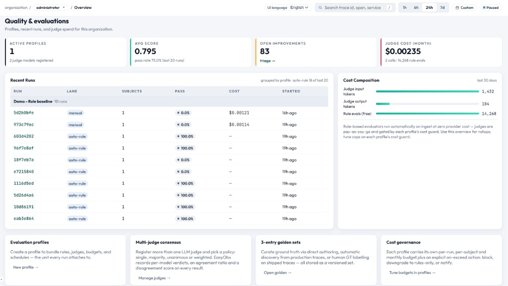

품질 평가 시스템
Rule 기반, LLM-as-a-Judge, 휴먼 라벨링을 하나의 플랫폼에 통합한 3-Way 평가 프레임워크입니다.

3-Way 평가
| 방식 | 속도 | 비용 | 적합한 용도 |
|---|---|---|---|
| Rule 기반 | 즉시 (수집 시점) | 무료 | 형식 검사, 길이 제한, 키워드 탐지, 정규식 패턴 등 |
| LLM-as-a-Judge | 초 단위 | 토큰 단위 과금 | 의미적 품질, 일관성, 관련성, 안전성 등 |
| 휴먼 라벨링 | 시간 단위 | 인력 비용 | 그라운드 트루스, 예외 케이스, 주관적 품질 평가 |
주요 차별점
- 다중 저지 합의 — 동일 평가 항목에 여러 LLM을 배정합니다. 합의 정책은
single,majority,unanimous,weighted중에서 선택할 수 있습니다. - 비용 거버넌스 — 실행별·대상별·월별 예산 상한을 두고
block,downgrade,notify정책을 적용할 수 있습니다. - 수집 시점 자동 룰 평가 — 트레이스가 도착하면 룰 평가가 자동으로 실행됩니다(fire-and-forget 방식이므로 수집을 절대 막지 않습니다).
- 개선 팩(Improvement Packs) — 점수가 낮은 평가 결과로부터 도출된 실행 가능한 제안 목록입니다. 52개 메트릭 × 58개 카테고리 매핑을 사용합니다.
- 골든 셋 회귀 테스트 — 큐레이션된 그라운드 트루스 데이터셋에 대해 자동 회귀 테스트를 수행합니다.
아키텍처
UI/UX 관점: 운영자는 트레이스 수집 직후 자동 룰 평가 결과를 즉시 확인하고, 필요할 때 저지/합의 흐름을 위한 Run을 실행하며, 마지막으로 Improvements에서 결과를 트리아지합니다.
모듈 구성
Profiles
무엇을 평가할지, 어떤 평가자(evaluator)를 사용할지, 결과를 어떻게 결합할지를 정의합니다.
Runs
트레이스를 대상으로 평가를 실행하고 pass/warn/fail 결과를 확인합니다.
LLM Judges
여러 provider의 LLM 저지 모델을 가중치·temperature와 함께 구성합니다. 차원별로 버전 관리되는 평가 프롬프트를 관리할 수 있습니다.
Golden Sets
회귀 테스트와 벤치마크를 위한 그라운드 트루스 데이터셋을 큐레이션합니다.
Improvements
평가 결과를 바탕으로 에이전트 품질을 높일 수 있는 실행 가능한 개선 제안을 제공합니다.
활성화 / 비활성화
# .env
EASYOBS_EVAL_ENABLED=true # 마스터 스위치
EASYOBS_EVAL_AUTO_RULE_ON_INGEST=true # 트레이스 도착 시 자동 평가비활성화 상태에서는 Quality 메뉴에 안내 페이지만 노출되며, 평가 관련 엔드포인트가 등록되지 않습니다.